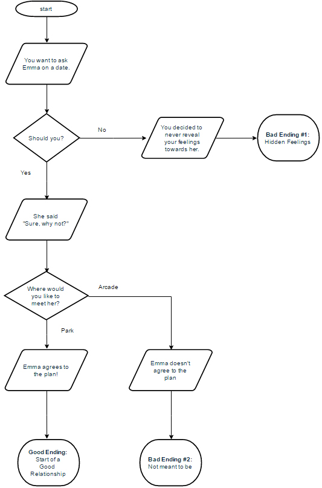
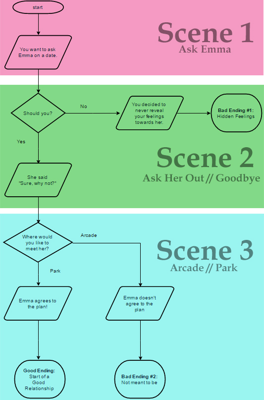
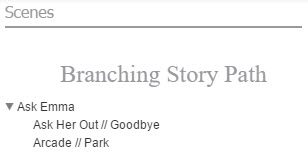
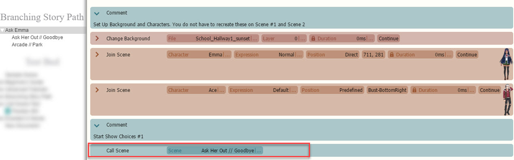
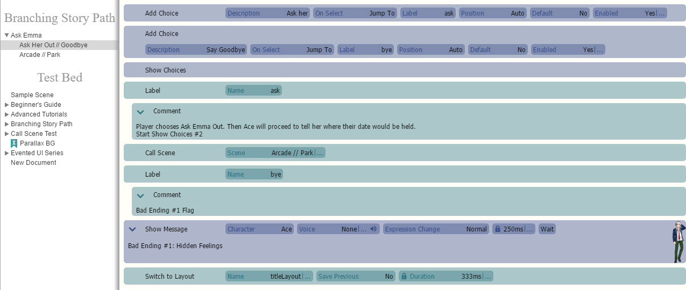
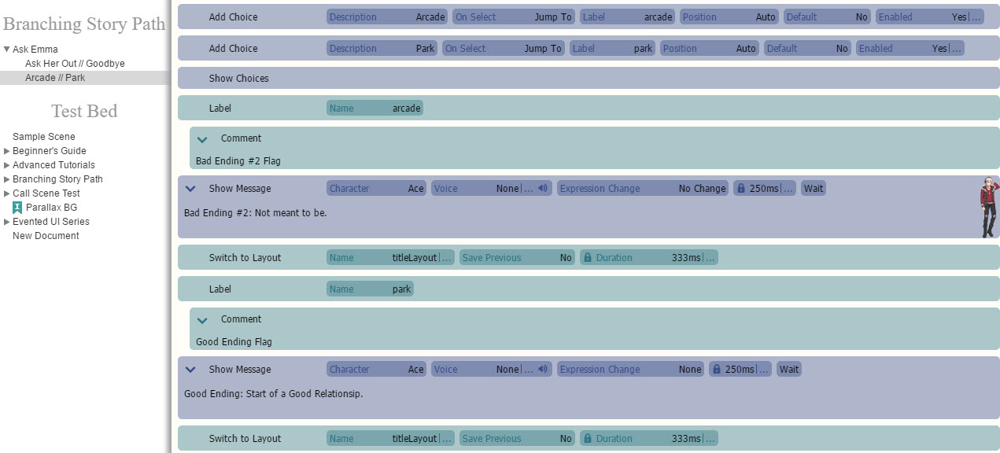
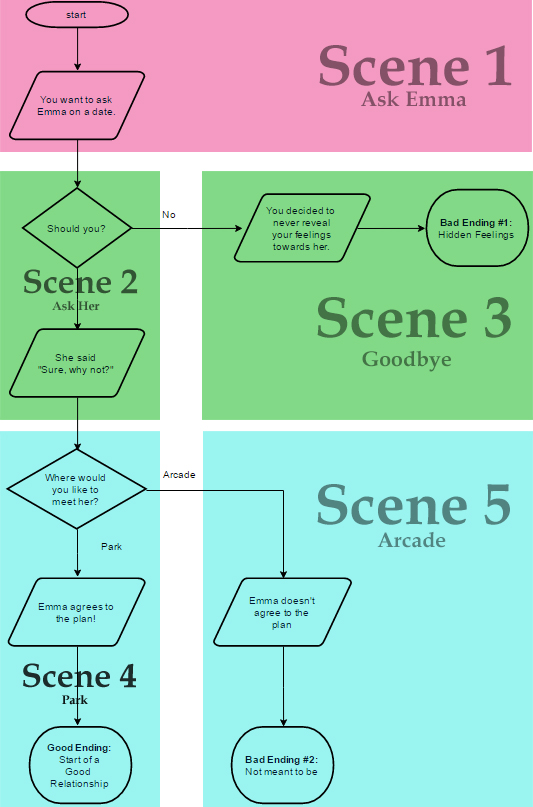
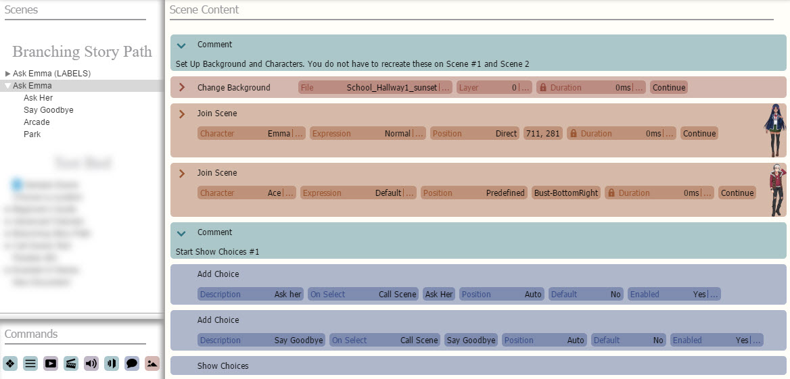
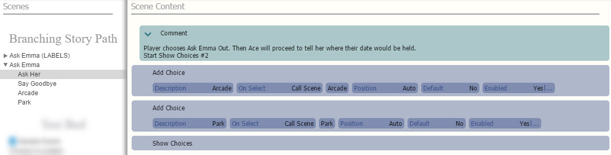
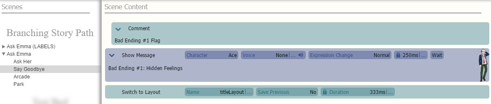

效果
缓动
效果
缓动

是用于擦除动画的缓动设置。动画是擦除动画的动画设置。显示.
锚点 -在左上角和中心之间选择锚点的位置。将锚点设置为中心仅在将使用缩放和旋转
命令时很重要，并且不会影响定位。
Z 顺序

是图片的 Z 索引。

动态模糊

-设置“是”以应用动态模糊，“否”以关闭。

生成时间- 创建新副本后的帧数。默认值为 2。溶解速度

- 生成的副本消散的速率。具体来说，副本的透明度
在每一帧都会降低。
不透明度- 复制

的图片在生成时开始的不透明度。默认值为 100。例如，如果溶解速度为 2，则阴影/鬼影/粒子将在 50 帧后完全消失/消失。
HTML

插件入门

入门：扩展

V
isual Novel Maker 提供了一个强大的扩展系统，允许开发新的编辑器或游戏引擎功能并与他人分享。要开发扩展，请通过“视图 > 扩展”打开扩展编辑器，或单击“扩展编辑器”选项卡。